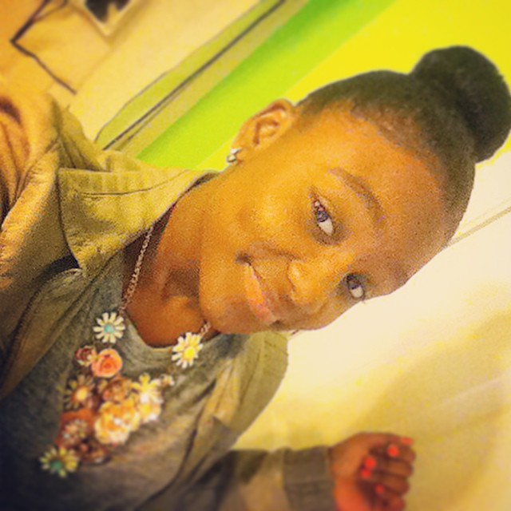

Hey everyone, my name is Nailah and I love singing! I don’t think anyone really
understands how much I love it, they just hear me, and say, “Wow she has a voice!” I
want them to recognize my voice, but also identify my passion for signing and
entertaining. I believe my passion for singing will open many doors of opportunity as the
world sees that I am truly living out my dream. So please take this time to get to know
me, and join me on my journey to stardom.
STARTING OUT YOUNG
My life began when I was born in Atlanta, Georgia in August 2000, but now I call
Duluth, Georgia my home. I started singing at the age of two, so I’m told. My dad
always played music in the house, and he still does. I would always sing along and
dance to the records and at an early age, music became a part of my everyday life. My
father and I would listen to music from so many different genres, from Classical to Hip-
Hop, R&B, and Caribbean music that my parents enjoyed growing up since they have
family with roots in both Haiti and Trinidad. Music has been a part of me for as long as I
can remember and even longer; believe it or not, when I get up to get my day started, I
find myself unintentionally singing as I get ready.
MORE ABOUT ME
Family and structure are a big part of me and my development as an artist as I
have a large family (I’m one within a family of six) and an even larger extended family.
Being a member of the Girl Scouts, the organization has taught me a lot of things and
fostered an environment that allowed me to build courage, confidence, and character.
When it comes to my future, I know that the possibilities are endless. Though I’m
still young, I’ve achieved a lot of things and plan on achieving more and I would be
grateful if you all would join me on this journey. Since I released my first ever single “I’m
Gonna Be Somebody Someday”, I’ve been on the road to living out my dream. I’ve
taken a glimpse into my future and seen what I can and will achieve throughout the
coming years, Stay Tuned…
- Nailah

Community
Nailiah is involved with the following organizations:


{kind=link}
{kind=link}